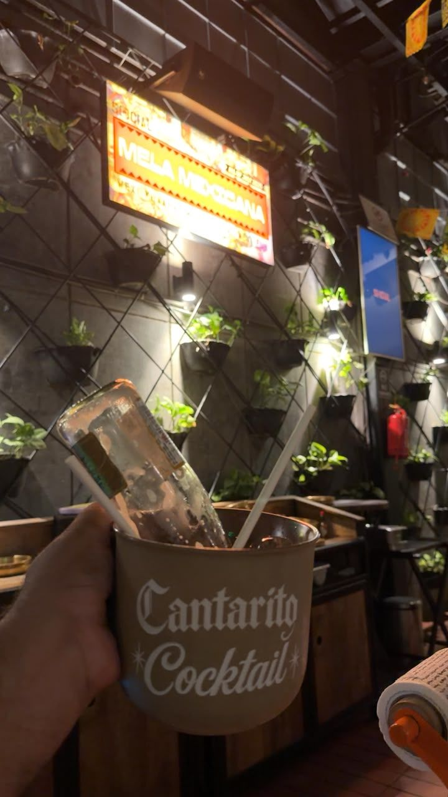
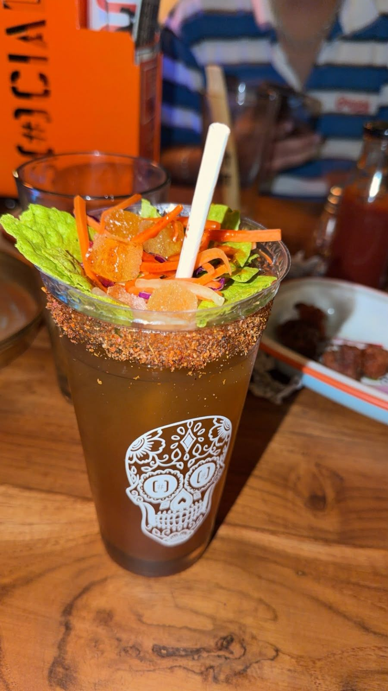
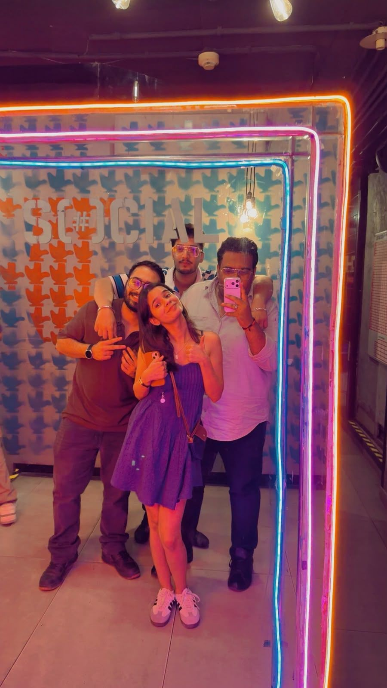
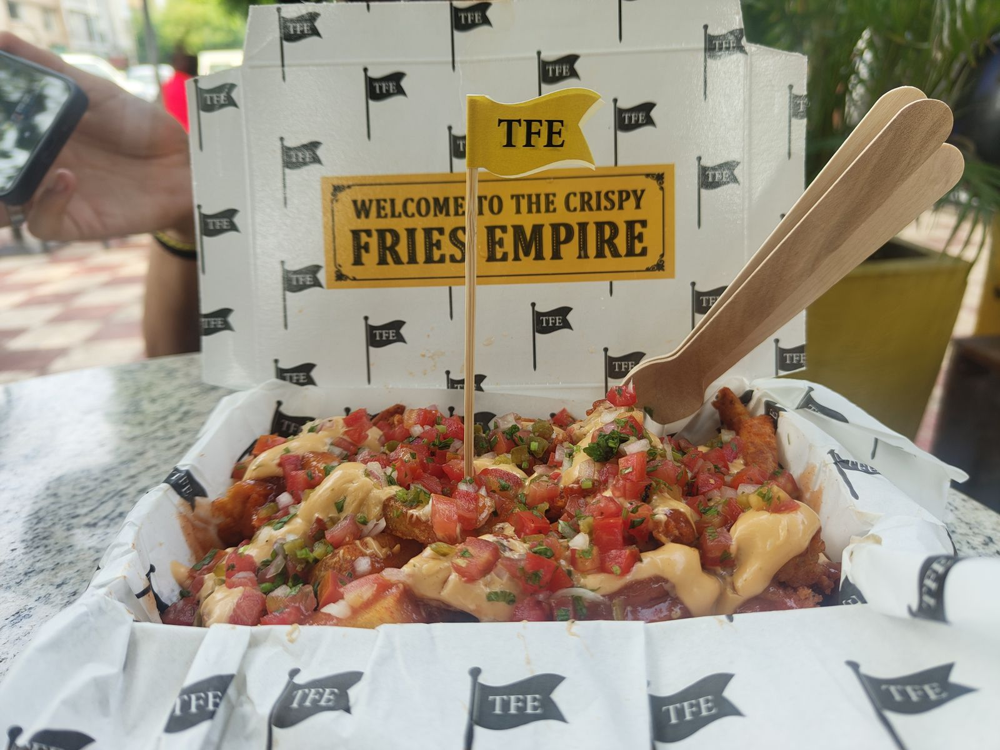
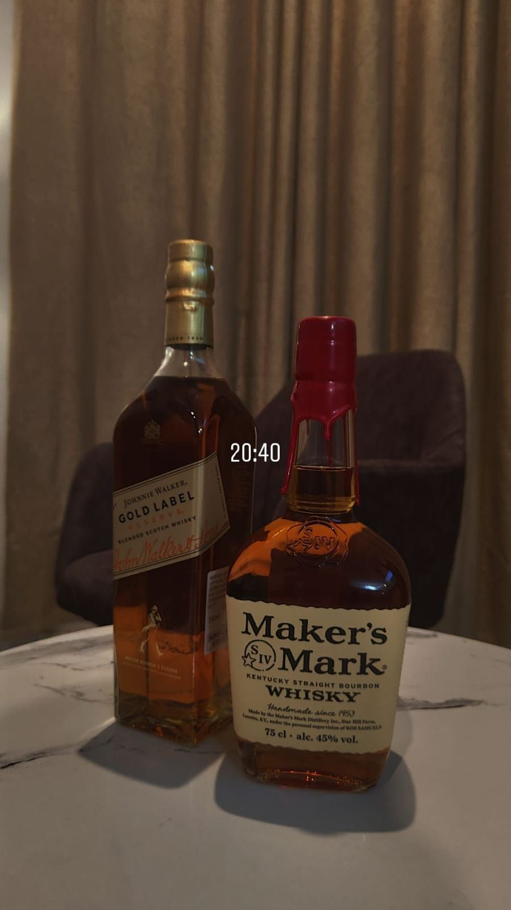
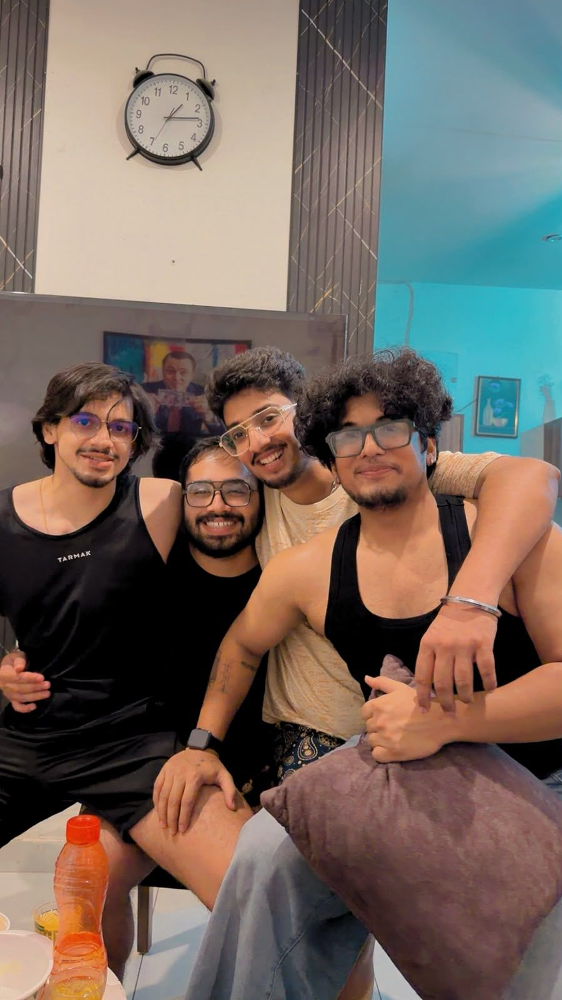
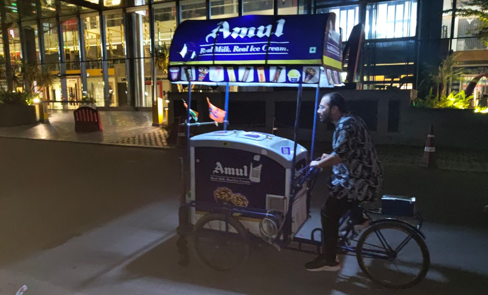
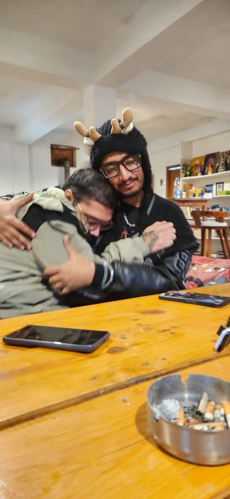

27 July to 2 August 2026Gagan's last weekend in the city
PUBLISHED 27 AUGUST 2026
Monday was a Monday. They always are. Monday is when the weekly reports get built and sent out to stakeholders and the rest of the day disappears into that. I woke up late, brushed, ate, logged into my shift, and by the evening I was doomscrolling and watching New Girl until I fell asleep. You will see this pattern a lot. Most days at home are exactly this.
Tuesday broke it. Gagan, who is one of my closest friends and lives in Chandigarh, said he might be moving to Mumbai for a new job.
I could not tell whether I was happy or sad about it. Both, probably, in the same second. Thinking about it now it is clearly a good thing, and I knew that at the time too, which did not help at all.
By Wednesday we had turned it into a plan. Meet that weekend, drink until we could not, laugh at nothing. That is our definition of fun and I am not going to defend it. I asked my manager for the Friday off and got it. Apart from Mondays, most weeks at work are a breeze.
Thursday I read about seventy chapters of Shadow Slave and packed a bag.
Friday, and three hours at the bus stand
I took an early bus because Hadesh said he would be getting in around the same time.
Hadesh, who was the entire reason I took the early bus, turned up three hours late. Gagan managed to be three hours late as well. I would like both of those on the record, in writing, on my own website.
So I did what any reasonable person does alone with three hours to kill. Two or three beers, and a bottle of whiskey bought for the next day. By the time they arrived I had stopped being annoyed about it.
In the evening we went to Social in Sector 7, which is one of our places. Social had a Mexican menu running called Mela Mexicana and it was the last night of it, so the welcome we got was not the usual one.


Venus came, which I had stopped expecting. I had been trying to get a plan with her to work for a long time and something went wrong with every single attempt, so by that Friday it had become one of those things you keep saying and stop believing. She turned up.

We drank a lot. We laughed a lot. It was a good night and I do not have anything more analytical to say about it than that.
Saturday, and the knockout wings
August arrived while we were still at Social. We left around one, dropped Venus at her hostel, got back to our place, and I genuinely cannot tell you what happened next. I think we slept. Let us go with slept.
Spider-Man was in cinemas so obviously we went. Hadesh had an exam and could not come, so one of Gagan's friends from college joined instead, and I had a great time.
Then there was a gap before the Airbnb check-in and we were hungry, so we went to the Sector 8 food market.
Gagan and his friend went off to The Fries Empire and left me to order at World of Wings on my own.

They should have known better than to leave me alone with a menu.
I asked for something spicy. The man handed me the menu, pointed at something called the Knockout wings, and grinned at me. I did not understand the grin at the time.
Those are the spiciest thing I have ever put in my mouth. All three of us had actual tears running down our faces. My tongue felt like it had been grated. I have no idea whether they were any good. I could not tell you what they tasted like, because after the first bite there was nothing left to taste with.
I am not scoring those. It would not be a fair fight.

We bought the second bottle because another of Gagan's friends was joining in the evening, went to the Airbnb, and played darts. I won. I am mentioning that because it is my website.

Sunday, and the bags
We all woke up late and checked out. The friend we had watched the film with went home from there, and the four of us went to Hadesh's place, where he ordered samosa and kachori and something else I have forgotten.
Then came the packing.
Somebody had to pack Gagan's bags for a move to Mumbai and that somebody was me. By the time it was done it was time for him to go. We said the goodbyes and the good lucks at Hadesh's place and he left for the airport from there.
I am still a bit salty about him moving that far away. I know it is the right move. Both of those are true at once and I am not going to pretend otherwise for the sake of a tidy ending.
I had planned to head home after that. Hadesh has a strange power to talk me out of leaving, so instead we went and ate at Pincode, which I scored and will write up separately. Then Hadesh, one of his friends and I went for momos, and they were some of the best I have had in Chandigarh. I did not expect that from a street cart. One of the best vendors I have come across.
I got the early ride home the next morning and logged into my shift half asleep.
Gagan
I come down to Tricity because three people are there. That is the entire reason and it has been the reason for years. Since that Sunday it has been two.
He will be fine. I have known him since 2021 and we lived together for the better part of four years, in a flat we named Good Vibes Only, which was accurate maybe eighty per cent of the time. One day we locked the door with him still outside. His phone had died and none of us heard him knocking. When he finally got in he threw his helmet across the room hard enough that it nearly took the television with it. Laughs, fights, all of it, and I would take those four years again without changing a single day of them.


Both of those are old and neither is from this weekend. I have put them here anyway. Everything from that weekend is four of us in a room being loud, and these two are closer to what I actually mean.
I do not have a tidy ending for this. He went. The next time I come down there will be one fewer person to come down for, and I will find out then what that actually feels like.